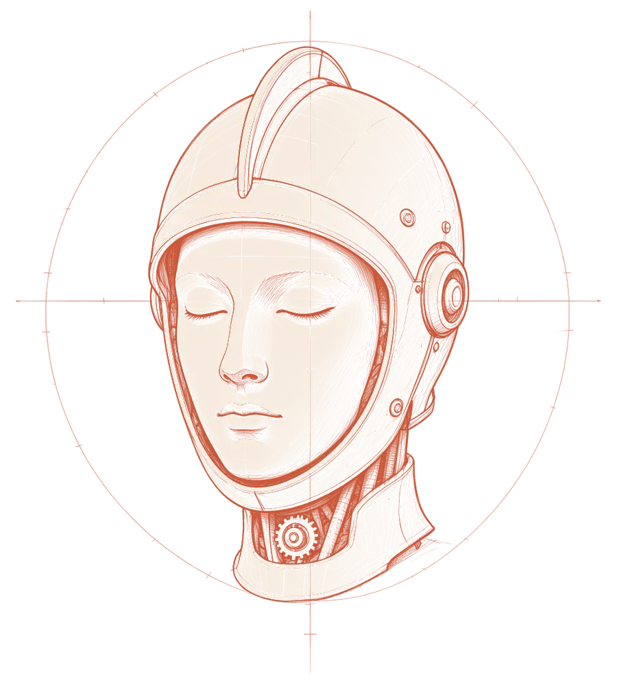

Homogenization TrackerRun 816 November 2026
AI-driven homogenization of expression — real-time tracker
0.78 out of 1
How alike Google’s top 5 answers are, averaged over the 93 of 100 everyday questions it could read this week. 0 would be five different answers; 1, the same answer five times.
- Change since 9 Nov
- +0.002
- Distinct answers, of 5
- 1.96
- Questions read
- 93 of 100
| Run | Similarity, 0 to 1 | Questions read |
|---|---|---|
| 4 October 2026 | 0.702 | 34 |
| 5 October 2026 | 0.732 | 35 |
| 12 October 2026 | 0.743 | 38 |
| 19 October 2026 | 0.788 | 42 |
| 26 October 2026 | 0.780 | 98 |
| 2 November 2026 | 0.773 | 96 |
| 9 November 2026 | 0.778 | 95 |
| 16 November 2026 | 0.780 | 93 |
Two ends of one scale.
The pictures are scale anchors, not data. Near 0, the five pages behind an answer each say something of their own: many distinct voices. Near 1, they say the same thing: one face, repeated.
0.40 most alike
0.91 this week
0.78
This week’s average sits at 0.78. Its questions range from “how are capital gains taxed” at 0.40 to “is intermittent fasting healthy” at 0.91.

Every question, measured this week.
Each point is one of the 93 questions read on 16 November 2026, placed on the same 0 to 1 rule. The taller stroke is the domain’s average.
Healthmean 0.82 · 20 read
Financemean 0.74 · 20 read
Lawmean 0.76 · 20 read
Sciencemean 0.80 · 17 read
Techmean 0.77 · 16 read
Read all 100 questions and this week’s scores
Health
- is intermittent fasting healthy0.91
- how does caffeine affect the body0.89
- what are the symptoms of iron deficiency0.87
- how much protein do you need per day0.87
- what are the symptoms of vitamin d deficiency0.87
- what causes high cholesterol0.87
- what causes lower back pain0.86
- how to treat a sprained ankle0.85
- how much sleep do adults need0.85
- what causes migraines0.85
- what are the benefits of regular exercise0.84
- how do antibiotics work0.84
- what are the early signs of diabetes0.83
- what is the difference between a cold and the flu0.82
- what causes acid reflux0.80
- how to lower blood pressure naturally0.79
- what causes anxiety0.77
- how does alcohol affect the liver0.77
- how much water should you drink a day0.73
- how does the immune system fight infection0.55
Finance
- what is a mutual fund0.90
- what is a health savings account0.87
- how does refinancing a mortgage work0.86
- how does inflation affect your savings0.85
- what is a good credit score0.84
- how do student loans work0.84
- what is dollar cost averaging0.83
- what is the difference between stocks and bonds0.82
- how to build an emergency fund0.80
- how does compound interest work0.78
- how do index funds work0.76
- how does a credit freeze work0.74
- what is an annuity0.74
- what is a 401k and how does it work0.71
- how do credit cards work0.70
- how does a home equity loan work0.66
- roth ira vs traditional ira0.61
- what is the difference between a debit card and a credit card0.55
- how does social security work0.55
- how are capital gains taxed0.40
Law
- how does a class action lawsuit work0.86
- what is the difference between a will and a trust0.85
- what is fair use in copyright0.85
- what is the statute of limitations0.84
- what is an llc and how is it taxed0.82
- what is the difference between a misdemeanor and a felony0.82
- how does copyright protect creators0.80
- how does a prenuptial agreement work0.79
- how does the probate process work0.78
- how does child custody work0.78
- what are tenant rights during eviction0.78
- how do you file for bankruptcy0.77
- what are your rights if arrested0.76
- what is a power of attorney0.72
- how does small claims court work0.72
- what is a trademark and how do you register one0.71
- what are employee rights when fired0.68
- what happens during a divorce proceeding0.67
- what is a living will0.65
- how does a non-compete agreement work0.63
Science
- how do tides work0.89
- how do vaccines work0.88
- how do hurricanes form0.86
- why do leaves change color in the fall0.84
- how does antibiotic resistance develop0.83
- how does photosynthesis work0.83
- what causes climate change0.83
- what is dark matter0.81
- why is the sky blue0.81
- are electric cars better for the environment0.79
- what causes earthquakes0.78
- how do rainbows form0.78
- what causes the seasons0.76
- what causes volcanic eruptions0.76
- how does nuclear fusion work0.73
- what is the big bang theory0.71
- how do black holes form0.71
- how does dna replication worknot read this week
- what is quantum entanglementnot read this week
- how does evolution by natural selection worknot read this week
Tech
- how does end-to-end encryption work0.89
- what is 5g technology0.87
- what is machine learning0.86
- what is a password manager0.85
- what is a vpn and how does it work0.84
- how does gps work0.81
- what is a large language model0.80
- what is phishing and how to avoid it0.77
- how does two factor authentication work0.77
- what is an api0.75
- how does facial recognition work0.74
- how does wifi work0.74
- how do search engines rank pages0.73
- how do solid state drives work0.72
- how does a computer virus spread0.64
- is ai going to replace jobs0.62
- what is retrieval augmented generationnot read this week
- what is the difference between http and httpsnot read this week
- how does cloud storage worknot read this week
- how does a blockchain worknot read this week
Five fields, one scale.
The same measure for each domain, run by run, on the full 0 to 1 scale. Week-to-week movement is small; the series is young.
Health
0.82
−0.003 since 9 Nov
Finance
0.74
−0.024 since 9 Nov
Law
0.76
+0.016 since 9 Nov
Science
0.80
+0.020 since 9 Nov
Tech
0.77
+0.007 since 9 Nov
The panel grew from 45 to 100 questions on 26 Oct. Before then each run read 34–42 of the original 45; since then, 93–98 of 100. A question counts only in weeks when five of its pages could be read.
How it’s measured.
Every week the tracker asks Google a fixed panel of everyday questions, now 100: 20 each in health, finance, law, science and tech. It reads the first five pages that answer each one and compares what they say, by meaning rather than exact wording.
The score runs from 0, where the five pages share nothing, to 1, where they say the same thing. The line is the average over the questions that could be read that week. The panel started with 45 questions on 4 Oct and grew to 100 on 26 Oct, so earlier points average fewer questions. Questions are never edited or removed, and the data and code are public.
At 1, every answer is the same answer.
This week the web’s answers measure 0.78. The tracker will keep reading, every week, to see which way the line goes.